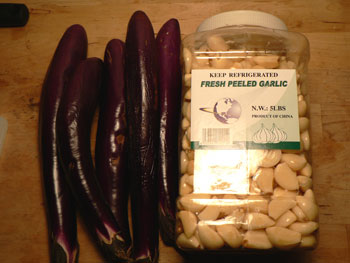

Chinatown bounty
On our way home from the Chinatown bus station, we came across an obviously illegal market underneath the Manhattan Bridge. For a grand total of $3, I bought five eggplant and five pounds of peeled garlic.

I’ve been looking for a huge quantity of peeled garlic since September, and I finally found it in all of its ridiculous glory. Can two men consume five pounds of garlic before the odor takes over their 400-square-foot apartment? Stay tuned and find out!
Comments
The obvious dish is chicken w/40 cloves of garlic but I"m sure you’re already planning on it. You could make some pesto and freeze it, I guess…
Mom
Just don’t get the bird flu. Or SARS. It could be making a comeback.
Don’t worry—I wore my little mask.
Add a comment